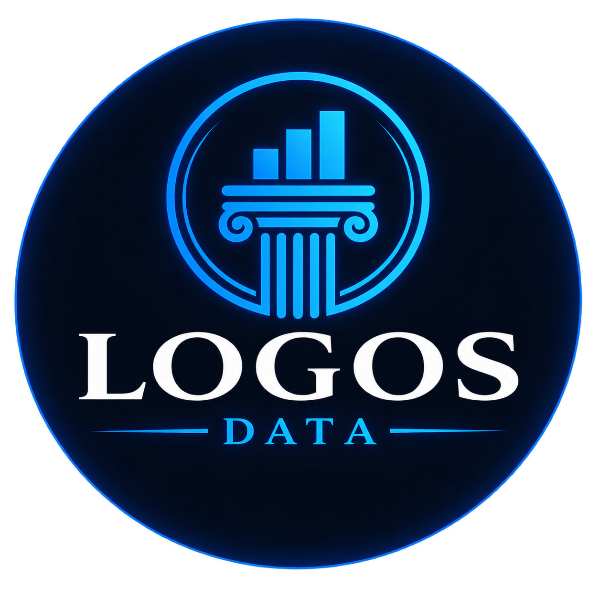

Dados em um só lugar
Conectamos planilhas, sistemas e bancos de dados para criar uma fonte única e confiável de informação.

LOGOS DATACentralizamos informações, automatizamos processos e criamos dashboards confiáveis para sua empresa decidir mais rápido — sem depender de planilhas frágeis ou trabalho manual.
Diagnóstico inicial gratuito. Sem compromisso e direto ao ponto.
Projetamos a estrutura certa para cada estágio do negócio. Menos retrabalho operacional, mais visibilidade sobre o que realmente move seus resultados.
Conectamos planilhas, sistemas e bancos de dados para criar uma fonte única e confiável de informação.
Substituímos rotinas manuais por pipelines monitorados, reduzindo erros, atrasos e horas desperdiçadas.
Transformamos dados em dashboards claros, úteis e alinhados às decisões do seu negócio.
Uma operação de dados bem estruturada não entrega apenas relatórios: ela devolve tempo, reduz risco e cria capacidade de crescimento.
Informações disponíveis no momento certo, sem esperar consolidações manuais.
Métricas consistentes, regras claras e menos divergência entre áreas.
Automações eliminam tarefas repetitivas e liberam sua equipe para atividades estratégicas.
Arquitetura preparada para novas análises, produtos de dados e inteligência artificial.
Começamos pelo problema do negócio, priorizamos o que traz retorno e construímos uma solução sustentável para sua equipe.
Entendemos objetivos, fontes de dados, gargalos e oportunidades de ganho rápido.
Definimos prioridades e implementamos integrações, automações e visualizações.
Validamos os resultados, documentamos a solução e apoiamos os próximos passos.

Founder e Engenheiro de Dados com experiência na interseção entre tecnologia e negócio. Desenvolve pipelines, automações e soluções de BI com foco em clareza, eficiência e impacto mensurável.
Converse diretamente com o especialista e receba um diagnóstico inicial do seu cenário.